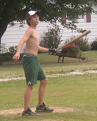
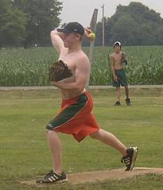
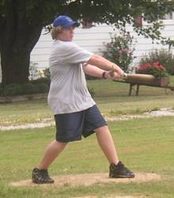
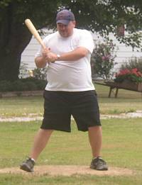
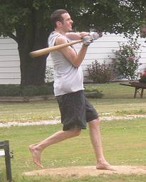
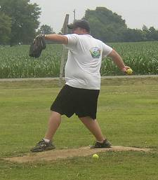
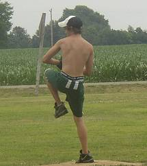
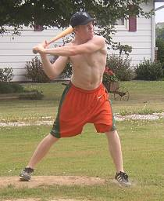

Donnie Hackney went 11-for-29 in the doubleheader with 3 homeruns and 5 RBI. |

Isaac Salters made his debut and went 1-1 on the day allowing 5 earned runs over 11 1/3 innings while striking out 8. |

Evan Woodard returned after a one month hiatus and finished with 4 hits. |

Paul Alf made his much-anticipated return and went 7-for-26 with a double and scored 3 runs. |

Patrick Cork was the day's top run producer finishing 10-for-25 with 5 homeruns and 10 RBI. |

Paul Alf improved to 2-0 in his career picking up the win in the opener by allowing just 3 runs (2 earned) in a complete game victory. |

Donnie Hackney threw in both games of the doubleheader and allowed 7 runs in 13 innings. He also struck out 6. |

Isaac Salters had the day's top average with a 13-for-29 performance including a triple, homerun and 4 runs scored. |
|